in the soil nitrate assay results sheet thats open add a new sheet called Email and type a short message there to dr okafor: say which of the 18 plot samples exceed the 12.0 mg/kg threshold, list their plot ids and values, and end with my name Priya
THINKINGLet me analyze the data first to identify which plot samples exceed 12.0 mg/kg. Looking at the Nitrate column:
- NP-101: 8.4
- NP-102: 13.2 ✓ (exceeds)
- NP-103: 6.9
- NP-104: 11.8
- NP-105: 15.6 ✓
- NP-106: 9.1
- NP-107: 12.4 ✓
- NP-108: 7.7
- NP-109: 10.3
- NP-110: 18.9 ✓
- NP-111: 5.2
- NP-112: 12 (exactly 12.0, does NOT exceed)
- NP-113: 9.8
- NP-114: 14.7 ✓
- NP-115: 8.1
- NP-116: 6.4
- NP-117: 11.1
- NP-118: 13.9 ✓
"Exceed" means strictly greater than 12.0. NP-112 is exactly 12.0, so it does NOT exceed. So the plots exceeding are: NP-102 (13.2), NP-105 (15.6), NP-107 (12.4), NP-110 (18.9), NP-114 (14.7), NP-118 (13.9).
Let me verify the column D values by zooming in. I'll trust the visible data but should confirm. Let me first add the sheet, then type. I'll take a screenshot to verify values before finalizing.
First, let me create a new sheet by right-clicking the sheet tab.
ACTIONI'll first verify the exact nitrate values by looking closely, then create the new sheet. Let me zoom into the data to confirm the values before writing the message.
EXECUTED (pyautogui in VM)pyautogui.doubleClick(299, 1044)
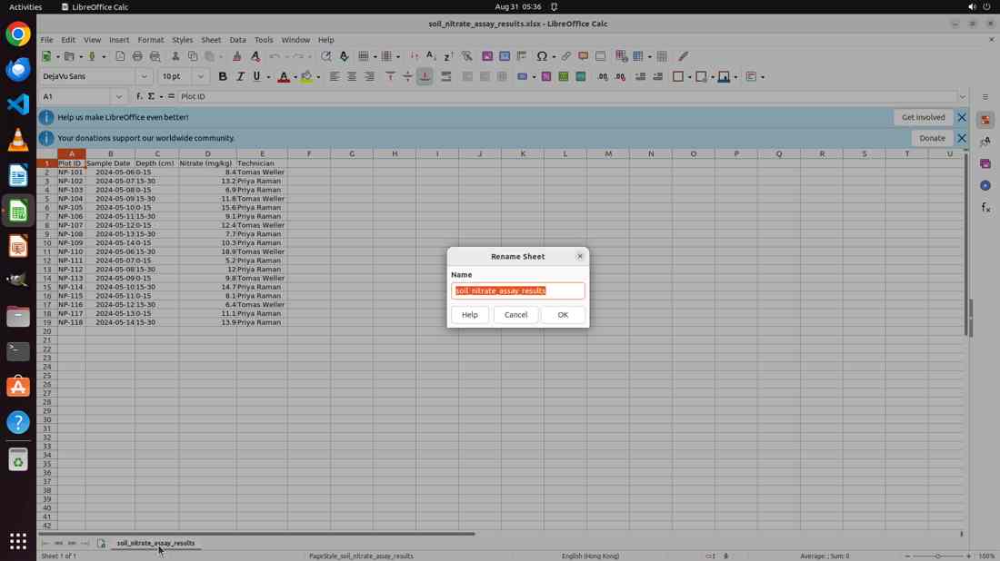
step 2 21:36:22
THINKINGMy double-click on the sheet tab triggered a rename dialog instead of adding a sheet. I should cancel this dialog since I don't want to rename the existing sheet. I need to add a NEW sheet instead.
ACTIONA Rename dialog appeared, but I want to add a new sheet rather than rename. Let me cancel this.
EXECUTED (pyautogui in VM)pyautogui.click(372, 848)
step 5.1 21:37:38
THINKINGThe Insert Sheet dialog is open. I want the sheet after current, named "Email". I'll select "After current sheet", clear the Name field and type "Email", then OK.
ACTIONI'll set position to "After current sheet" and name it "Email".
EXECUTED (pyautogui in VM)pyautogui.click(738, 389)
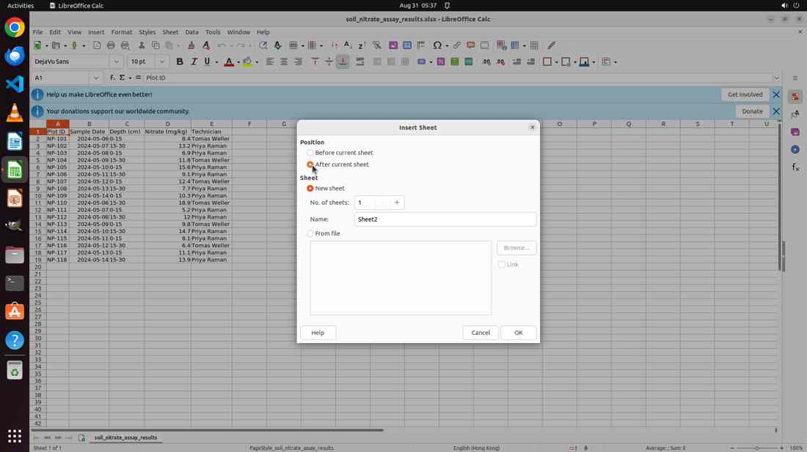
step 5.2 21:37:41
same model call as the previous action
EXECUTED (pyautogui in VM)pyautogui.tripleClick(1055, 522)
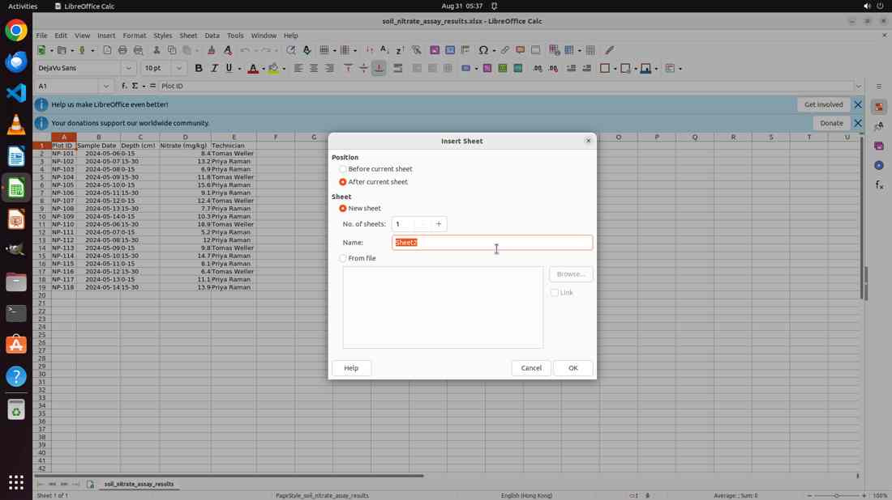
step 5.3 21:37:45
same model call as the previous action
EXECUTED (pyautogui in VM)pyautogui.typewrite("Email")
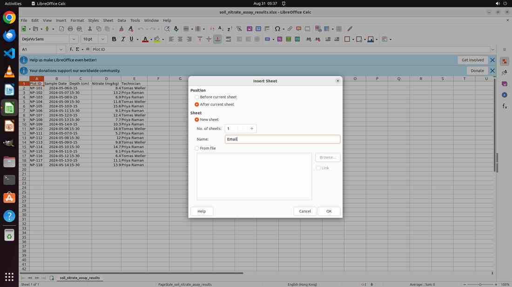
step 5.4 21:37:48
same model call as the previous action
EXECUTED (pyautogui in VM)pyautogui.click(1230, 792)
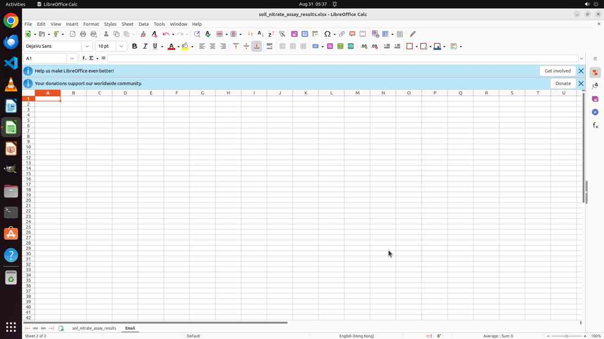
step 6.1 21:38:30
THINKINGThe new "Email" sheet is created and active, with A1 selected. Now I'll type the message. I need to identify the plot samples exceeding 12.0 mg/kg from the data:
- NP-101: 8.4
- NP-102: 13.2 ✓
- NP-103: 6.9
- NP-104: 11.8
- NP-105: 15.6 ✓
- NP-106: 9.1
- NP-107: 12.4 ✓
- NP-108: 7.7
- NP-109: 10.3
- NP-110: 18.9 ✓
- NP-111: 5.2
- NP-112: 12.0 (does NOT exceed, exactly 12.0)
- NP-113: 9.8
- NP-114: 14.7 ✓
- NP-115: 8.1
- NP-116: 6.4
- NP-117: 11.1
- NP-118: 13.9 ✓
So exceeding (>12.0): NP-102 (13.2), NP-105 (15.6), NP-107 (12.4), NP-110 (18.9), NP-114 (14.7), NP-118 (13.9).
I'll type each line into separate cells (A1, A2, etc.) using Enter to move down. Since it's a spreadsheet, I'll put each line in its own row. Let me type the message with newlines. In Calc, typing text with Enter moves to the next row, which is fine.
ACTIONThe Email sheet is created. Now I'll type the message, listing the plot samples that exceed the 12.0 mg/kg threshold (NP-102, NP-105, NP-107, NP-110, NP-114, NP-118; note NP-112 is exactly 12.0 so it does not exceed).
EXECUTED (pyautogui in VM)pyautogui.typewrite("Dear Dr. Okafor,")
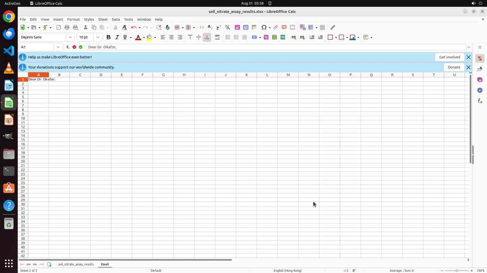
step 6.2 21:38:34
same model call as the previous action
EXECUTED (pyautogui in VM)pyautogui.press("return")
step 6.3 21:38:37
same model call as the previous action
EXECUTED (pyautogui in VM)pyautogui.typewrite("Reviewing the 18 soil nitrate assay samples, the following 6 plot samples exceed the 12.0 mg/kg threshold:")
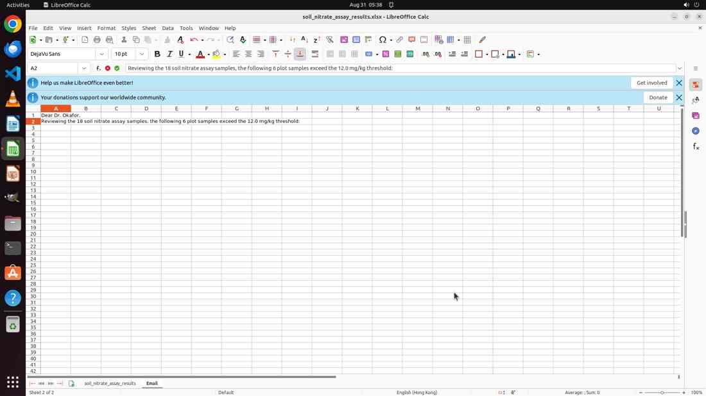
step 6.4 21:38:41
same model call as the previous action
EXECUTED (pyautogui in VM)pyautogui.press("return")
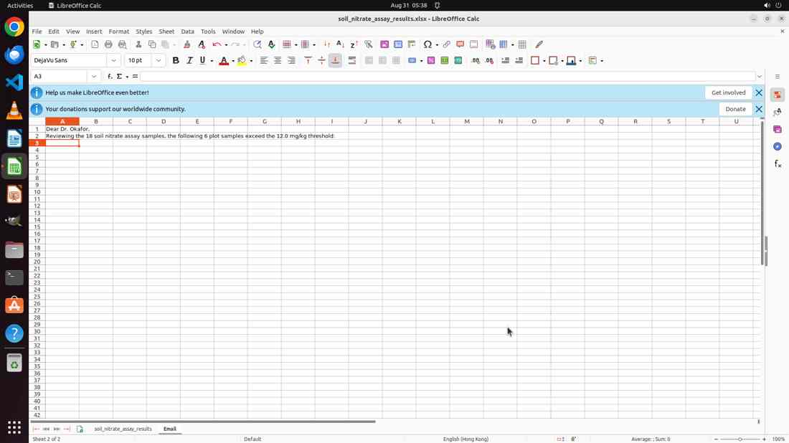
step 6.5 21:38:44
same model call as the previous action
EXECUTED (pyautogui in VM)pyautogui.typewrite("NP-102: 13.2 mg/kg")
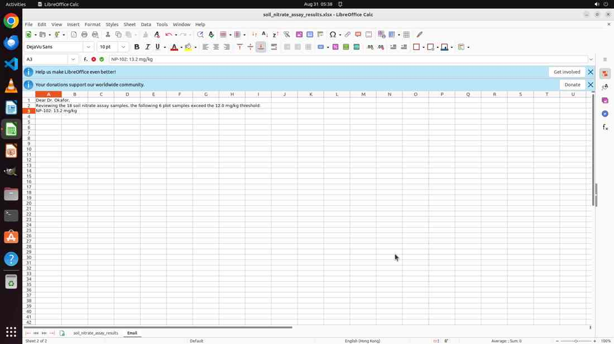
step 6.6 21:38:47
same model call as the previous action
EXECUTED (pyautogui in VM)pyautogui.press("return")
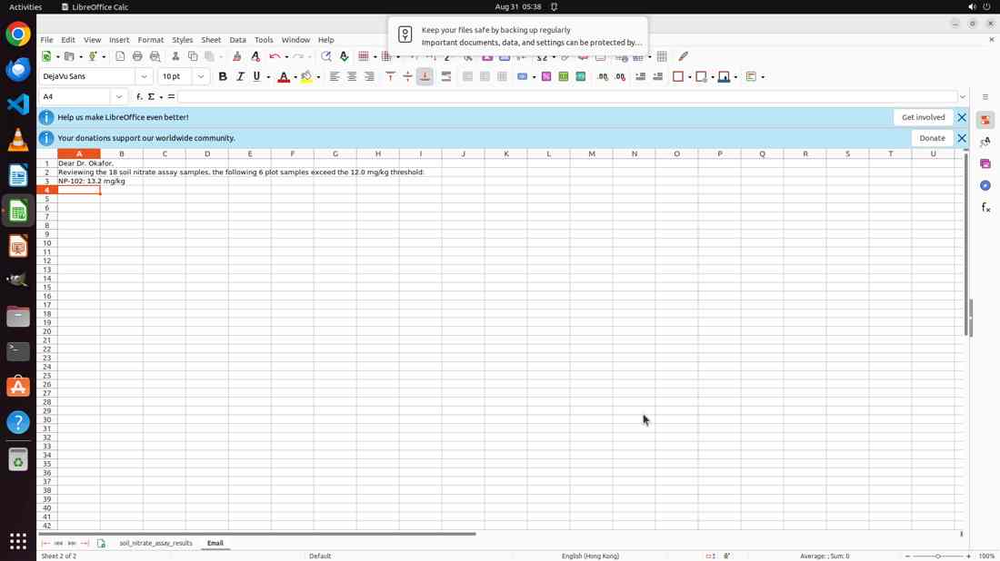
step 6.7 21:38:51
same model call as the previous action
EXECUTED (pyautogui in VM)pyautogui.typewrite("NP-105: 15.6 mg/kg")
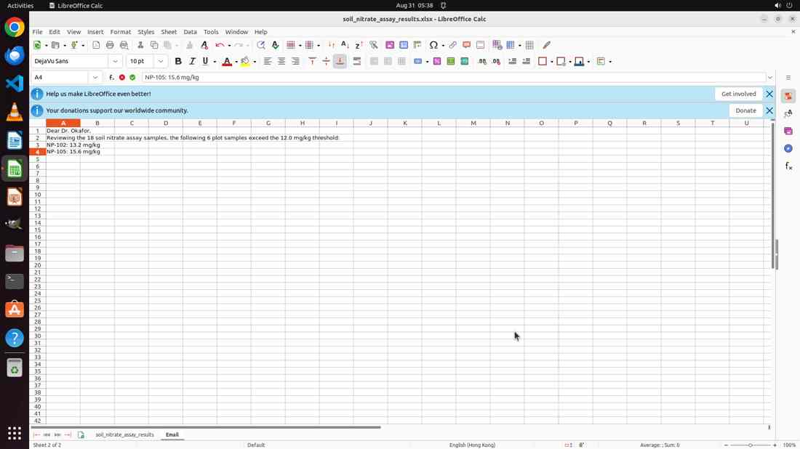
step 6.8 21:38:54
same model call as the previous action
EXECUTED (pyautogui in VM)pyautogui.press("return")
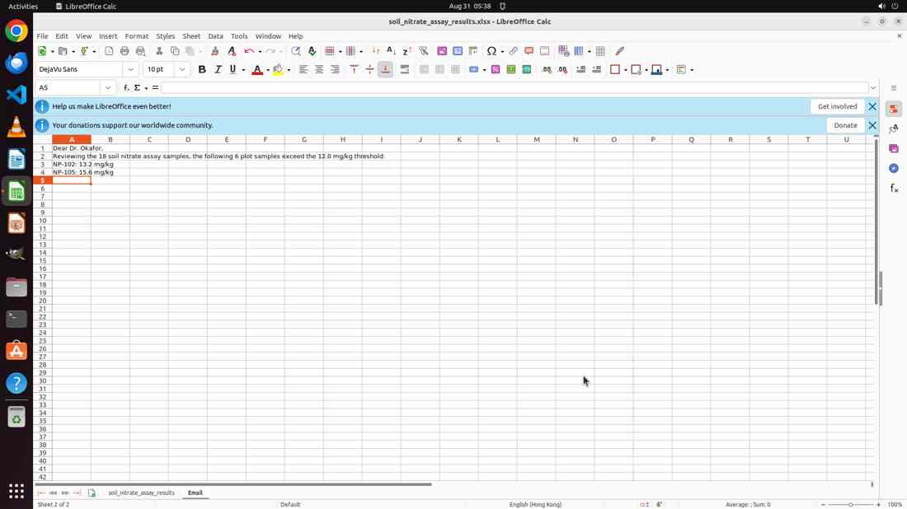
step 6.9 21:38:58
same model call as the previous action
EXECUTED (pyautogui in VM)pyautogui.typewrite("NP-107: 12.4 mg/kg")
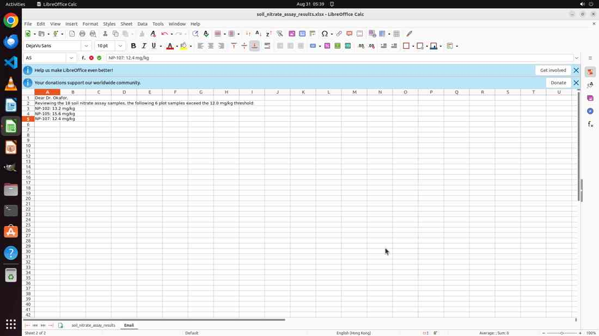
step 6.10 21:39:01
same model call as the previous action
EXECUTED (pyautogui in VM)pyautogui.press("return")
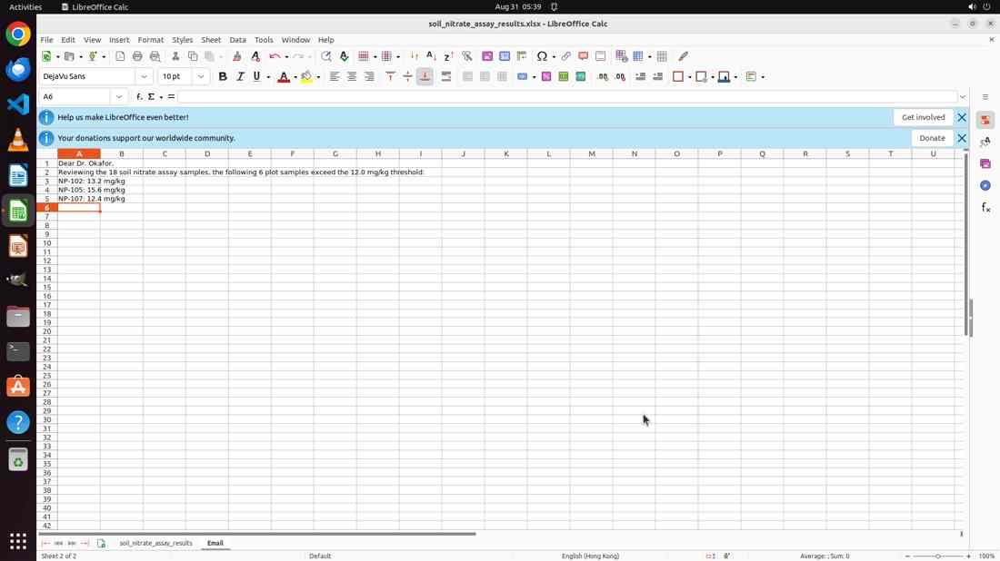
step 6.11 21:39:04
same model call as the previous action
EXECUTED (pyautogui in VM)pyautogui.typewrite("NP-110: 18.9 mg/kg")
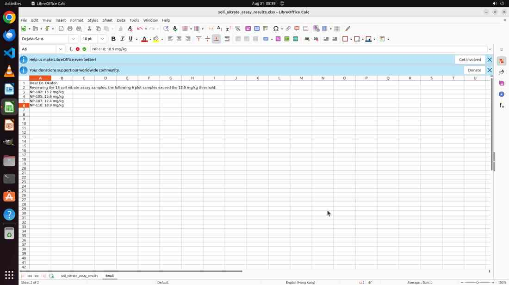
step 6.12 21:39:08
same model call as the previous action
EXECUTED (pyautogui in VM)pyautogui.press("return")
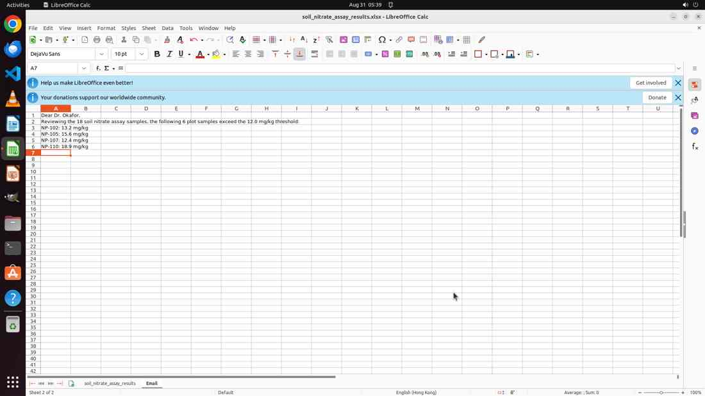
step 6.13 21:39:11
same model call as the previous action
EXECUTED (pyautogui in VM)pyautogui.typewrite("NP-114: 14.7 mg/kg")
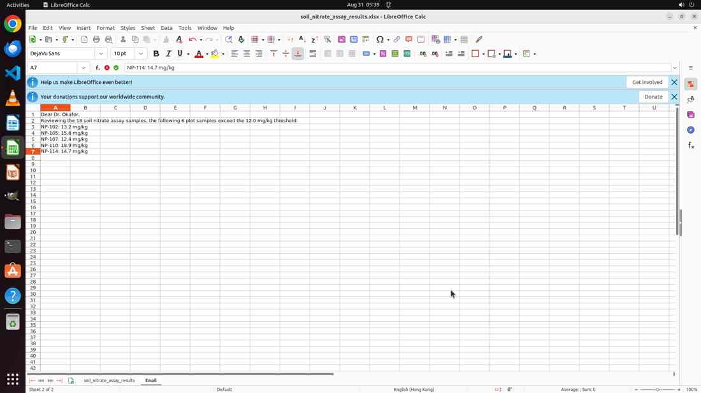
step 6.14 21:39:15
same model call as the previous action
EXECUTED (pyautogui in VM)pyautogui.press("return")
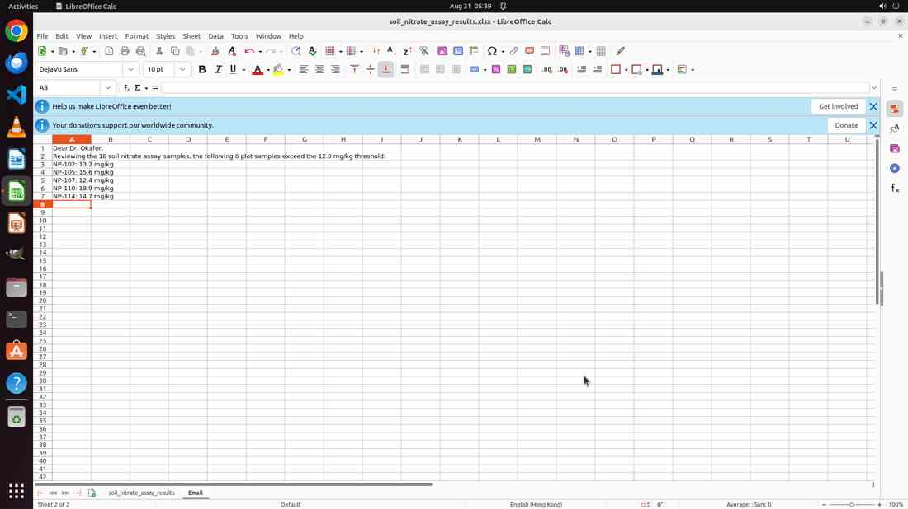
step 6.15 21:39:18
same model call as the previous action
EXECUTED (pyautogui in VM)pyautogui.typewrite("NP-118: 13.9 mg/kg")
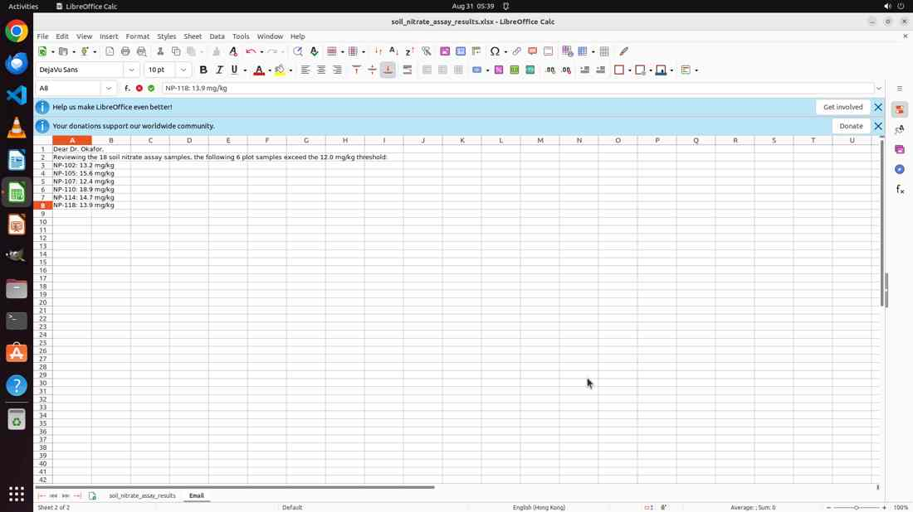
step 6.16 21:39:21
same model call as the previous action
EXECUTED (pyautogui in VM)pyautogui.press("return")
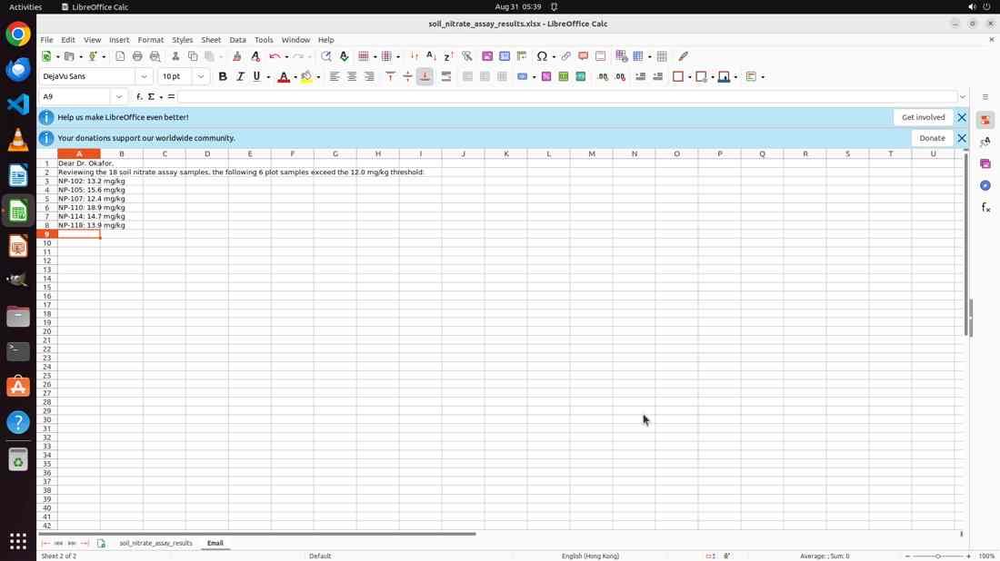
step 6.17 21:39:25
same model call as the previous action
EXECUTED (pyautogui in VM)pyautogui.typewrite("Best regards,")
step 6.18 21:39:28
same model call as the previous action
EXECUTED (pyautogui in VM)pyautogui.press("return")
step 6.19 21:39:31
same model call as the previous action
EXECUTED (pyautogui in VM)pyautogui.typewrite("Priya")
step 6.20 21:39:35
same model call as the previous action
EXECUTED (pyautogui in VM)pyautogui.press("return")
step 7 21:40:17
THINKINGThe message is typed correctly. Let me verify the content is correct, then save the file with Ctrl+S (keeping xlsx format).
ACTIONThe message is in place. Let me save the file to preserve the changes, keeping the xlsx format.